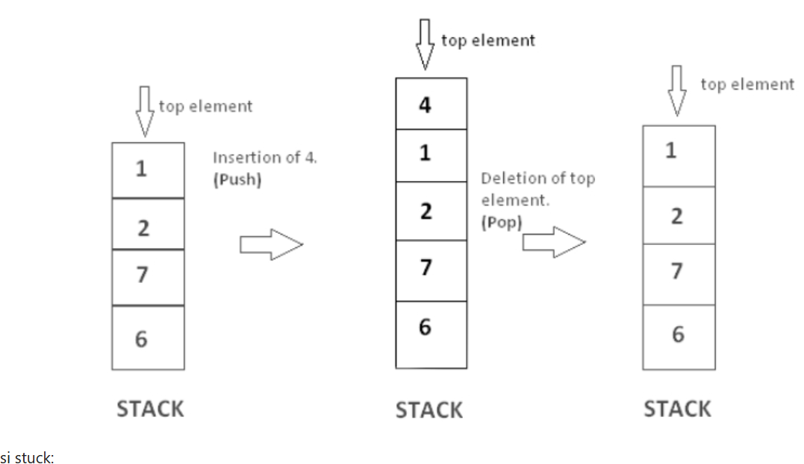

Stack#
stack adalah satu struktur data dimana penambahan dan penghapusan data, hanya dapat dilakukan pada satu ujung yang sama, atau yang biasa di kenal dengan istilah top. semakin data jauh berada dari posisi top, maka data tersebut di indikasikan berada di stack lebih lama dibandingkan dengan data yang berada dekat pada data diposisi top. jika terdapat data baru yang ditambahkan di stack, maka data ini pulalah yang akan dihapus ketika terdapat proses penghapusan data. Konsep ini dikenal dengan nama LIFO (Last In First Out) Operasi pada Stacks: Terdapat operasi dasar pada Stacks,
stack (), inisialisasi stack yang kosong
push(data), penambahan data baru pada posisi top dari stack
pop(), penghapusan data yang terdapat di posisi top dari stack. Return value dari fungsi ini adalah data yang dihapus dari stack tersebut
peek(), informasi data yang terletak pada posisi top
isEmpty(), untuk memeriksa apakah stack dalam keadaan kosong
size(), informasi jumlah data yang terdapat pada stack
ilustrasi stuck:

berikut beberapa fungsi python buatan untuk menggunakan operasi stack:def stack () :
s =[]
return (s)
def push (s , data ):
s. append ( data )
def pop(s):
data =s.pop()
return(data)
def peek(s):
return s[-1]
def isEmpty(s):
return (s ==[])
def size(s):
return (len(s))
def biner(desimal):
st = stack()
proses = []
while desimal > 0:
sisa = desimal % 2
push(st, sisa)
desimal = desimal // 2
push(proses, f"Push stack with {sisa} ---> {st}")
hasil = ""
while not isEmpty(st):
ambil = pop(st)
hasil += str(ambil)
push(proses, f"Pop stack with ---> {st}")
return hasil, proses
num = 57
hasil, proses = biner(num)
for i in proses:
print(i)
print(f"\nbiner {num} = {hasil}")
#-----------------------------------------
def stack():
s = []
return s
def push(s, data):
s.append(data)
def pop(s):
data = s.pop()
return data
def peek(s):
return s[-1]
def isEmpty(s):
return (s == [])
def size(s):
return (len(s))
def cek_kurung(num):
st = stack()
proses = []
error = []
chek = True
pasangan = {')':'(', ']':'[', '}':'{'}
for i in num:
if i in "([{":
push(st, i)
push(proses, f"Push stack with {i} --> {st}")
elif i in ")]}":
if not isEmpty(st):
ambil_st = pop(st)
push(proses, f"Pop Stack --> {st}")
if pasangan[i] != ambil_st:
push(error, f"kurung buka {ambil_st} tidak cocok dengan {i}")
chek = False
else:
push(error, "kelebihan kurung tutup")
chek = False
if not isEmpty(st):
push(error, "kelebihan kurung buka")
chek = False
return error, proses, chek
persamaan = "([4+5]/[9+8]*[3+2])"
error, proses, chek = cek_kurung(persamaan)
print(chek)
print("Proses Cek:")
no = 1
for i in proses:
print(f"{no}. {i}")
no += 1
no = 1
print("\nError:")
for i in error:
print(f"{no}. {i}")
no += 1
#-------------------------------------------------
def stack():
s=[]
return (s)
def push(s,data):
s.append(data)
def pop(s):
data=s.pop()
return(data)
def peek(s):
return(s[len(s)-1])
def isEmpty(s):
return (s==[])
def size(s):
return(len(s))
infix = input("masukkan infix (pisahkan dengan spasi): ").split()
opstack = stack()
output = stack()
operator = "*+-/"
presenden = {
"*" : 2,
"/" : 2,
"+" : 1,
"-" : 1
}
for i in infix:
if i in operator:
while not isEmpty(opstack) and peek(opstack) in operator and presenden[i] <= presenden[peek(opstack)]:
push(output, pop(opstack))
push(opstack, i)
elif i == "(":
push(opstack, i)
elif i == ")":
while not isEmpty(opstack) and peek(opstack) != "(":
push(output, pop(opstack))
pop(opstack)
else:
push(output, i)
while not isEmpty(opstack):
push(output, pop(opstack))
hasil = ""
for i in output:
hasil += i + " "
print(f"Bentuk postfixnya adalah {hasil}")
Push stack with 1 ---> [1]
Push stack with 0 ---> [1, 0]
Push stack with 0 ---> [1, 0, 0]
Push stack with 1 ---> [1, 0, 0, 1]
Push stack with 1 ---> [1, 0, 0, 1, 1]
Push stack with 1 ---> [1, 0, 0, 1, 1, 1]
Pop stack with ---> [1, 0, 0, 1, 1]
Pop stack with ---> [1, 0, 0, 1]
Pop stack with ---> [1, 0, 0]
Pop stack with ---> [1, 0]
Pop stack with ---> [1]
Pop stack with ---> []
biner 57 = 111001
True
Proses Cek:
1. Push stack with ( --> ['(']
2. Push stack with [ --> ['(', '[']
3. Pop Stack --> ['(']
4. Push stack with [ --> ['(', '[']
5. Pop Stack --> ['(']
6. Push stack with [ --> ['(', '[']
7. Pop Stack --> ['(']
8. Pop Stack --> []
Error:
---------------------------------------------------------------------------
StdinNotImplementedError Traceback (most recent call last)
Cell In[1], line 141
137
138 def size(s):
139 return(len(s))
140
--> 141 infix = input("masukkan infix (pisahkan dengan spasi): ").split()
142 opstack = stack()
143 output = stack()
144
File ~\strukdat\Lib\site-packages\ipykernel\kernelbase.py:1402, in Kernel.raw_input(self, prompt)
1400 if not self._allow_stdin:
1401 msg = "raw_input was called, but this frontend does not support input requests."
-> 1402 raise StdinNotImplementedError(msg)
1403 return self._input_request(
1404 str(prompt),
1405 self._get_shell_context_var(self._shell_parent_ident),
1406 self.get_parent("shell"),
1407 password=False,
1408 )
StdinNotImplementedError: raw_input was called, but this frontend does not support input requests.
class Stack:
def __init__(self):
self.stack = []
def push(self, element):
self.stack.append(element)
def pop(self):
if self.isEmpty():
return "Stack is empty"
return self.stack.pop()
def peek(self):
if self.isEmpty():
return "Stack is empty"
return self.stack[-1]
def isEmpty(self):
return len(self.stack) == 0
def size(self):
return len(self.stack)
#---------------------------------------------
def stack():
s = []
return s
def push(s, new_data):
s.append(new_data)
return new_data
def pop(s):
hapus_data = s.pop()
return hapus_data
def peek(s):
return s[-1]
def isEmpty(s):
return s == []
def size(s):
return len(s)
# latihan soal dalam mengoperasikan stack:
# Membalikkan kata
stack = []
kata = "faizal"
for i in kata:
stack.append(i)
hasil = ""
for i in range(len(stack)-1, -1, -1):
hasil = hasil + stack[i]
print(hasil)
laziaf
# undo
stack = []
while True:
kata = input("Masukkan kata: ")
if kata == "undo":
stack.pop()
print(stack.pop())
break
else:
stack.append(kata)
#len manual
stack = [1, 2, 3, 4]
hasil = 0
while stack:
stack.pop()
hasil += 1
print(hasil)
# Reverse kalimat
kalimat = input("Masukkan kalimat: ").split()
satck = []
for i in kalimat:
satck.append(i)
reverse = ""
for i in range(len(kalimat)-1, -1, -1):
reverse += f"{kalimat[i]} "
print(reverse)
# Menghapus Nilai 30 dengan konsep stuck
stack = [10, 20, 30, 40, 50]
tampung = []
for i in range(len(stack)-1, -1, -1):
if stack[i] == 30:
stack.pop()
break
else:
tampung.append(stack.pop())
print(tampung)
for i in range(len(tampung)-1, -1, -1):
stack.append(tampung[i])
print(stack)
# Parkiran dengan konsep stuck
parkiran = []
while True:
if len(parkiran) < 5:
mobil = input("apakah anda ingin masuk atau keluar: ")
if mobil == "masuk":
jenis_mobil = input("Masukkan mobil anda: ")
parkiran.append(jenis_mobil)
elif mobil == "keluar":
parkiran.pop()
else:
print("Pilihan tidak valid!")
else:
print("Parkiran Telah Penuh!")
print(parkiran)
break
# Rak buku dengan beberapa menu menggunakan konsep stuck
rak_buku = []
while True:
menu = ("1.Tambah Buku\n2. Ambil Buku Paling Atas\n3. Tampilkan Buku Paling Atas\n4. Tampilkan Seluruh Bukun\n5. keluar")
print(menu)
pilihan = int(input("pilih menu 1/2/3/4: "))
if pilihan == 1:
buku = input("Masukkan Judul Buku: ")
rak_buku.append(buku)
elif pilihan == 2:
print(f"buku yang anda ambil berjudul {rak_buku.pop()}")
elif pilihan == 3:
print(f"Buku paling atas adalah {rak_buku[len(rak_buku)-1]}")
elif pilihan == 4:
print(f"Daftar Buku")
for i in range(0, len(rak_buku)):
print(f"{i + 1}.{rak_buku[i]}")
elif pilihan == 5:
break
else:
print("Pilihan tidak valid!")